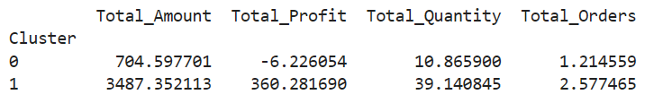
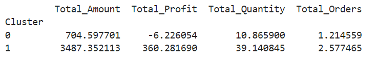

Exploratory Data Analysis

The distribution of transaction amounts shows a strong right skew, indicating a majority of low-value transactions and a few high-value ones which could affect average metrics.

Most purchases are for small quantities, typically 1–3 units. Bulk orders are rare. This reflects common consumer purchasing behavior in retail

Profit values show with many near-zero values. This suggests thin profit margins and the possibility of many low-profit items or frequent discounts.

Phones and Chairs show consistently high profits, making them top-performing items. Binders, Tables, and Bookcases display negative or very low average profits, indicating potential loss-making areas or heavy discounting.

Clothing stands out as a highly profitable category with a wide spread. Furniture shows inconsistent profits, with some losses, suggesting it needs further attention.

Daily profits show volatility with several negative profit days, indicating returns, discounts, or operational losses. Overall, there’s no consistent upward or downward trend.
 
